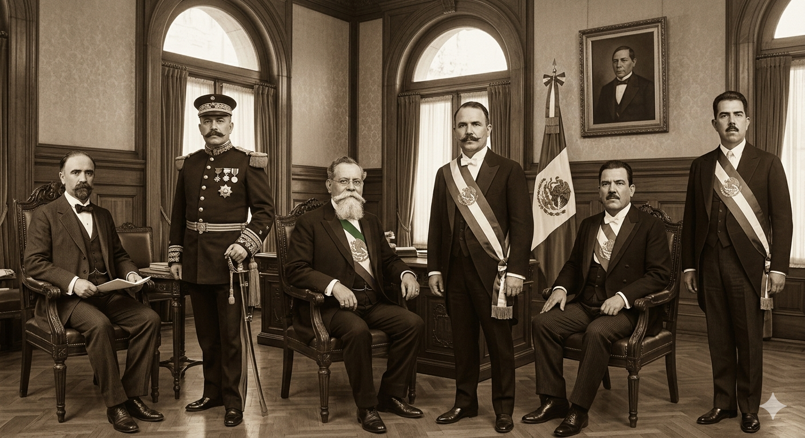

El siglo XX en México se puede divivir en tres momentos: los gobiernos emanados de la Revolución, los gobiernos que vieron en la industrialización el progreso social y los gobiernos que se insertaron en la globalización con todas sus implicaciones.
Da clic en las imágenes... ¿Sabes sus nombres y por qué hechos se les recuerda?

Siempre toma en cuenta la coyuntura internacional: Revolución rusa (1917), Unión Soviétiva (1922), Segunda Guerra Mundial (1939-1945), Guerra Fría (1947-1991), Revolución cubana (1959), Crisis de los misiles (1962), Caída del Muro de Berlín (1989), Fin de la Unión Soviética (1991)
Inicio
Mapa de hitos presidenciales
¿Cómo se crean las tensiones políticas, económicas e ideológicas de las cuales la cultura abreva para su postura social? Navega este mapa para tener un panorama general de las diferentes posturas ante mismos fenómenos.
Estación 1
Primer cambio visible
Usa este panel para mostrar el primer giro de la historia: una subida, una concentración, una ausencia o una diferencia territorial.
Estación 2
Comparar lugares o grupos
El recorrido lateral permite sostener una misma pregunta mientras cambian los casos. Aquí puedes reemplazar la ilustración por un mapa o un gráfico.
Estación 3
Detenerse en un caso
Después de comparar, acerca la lectura. Un panel de detalle ayuda a explicar una excepción, una historia local o una consecuencia concreta.
68%caso destacado
Cierre
Dejar una conclusión
Cierra el recorrido con una idea que conecte todos los paneles. Explica qué cambió en la lectura después de moverse por la secuencia.
Panorama general
El chismógrafo de la
Presidencia de México
Recordarlo todo es imposible: aquí se enuncia algunas ideas para el imaginario cultural.